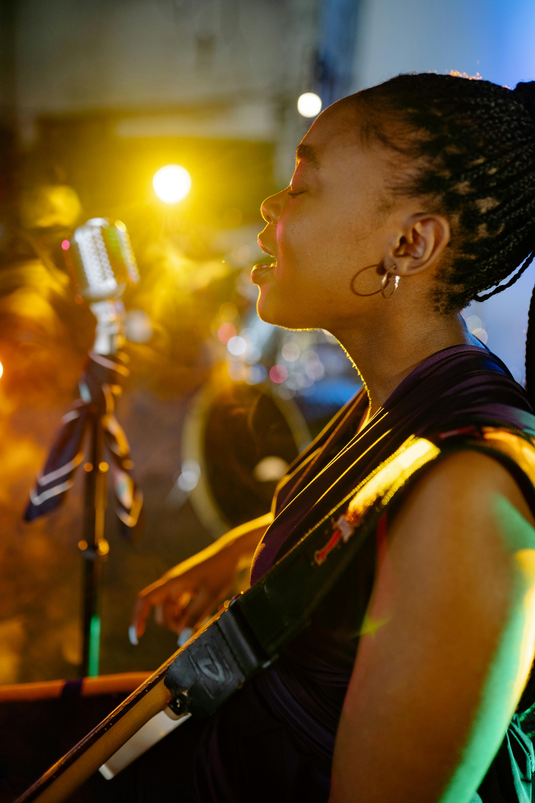

Una fusión perfecta entre ritmo, improvisación y cultura porteña
10 de octubre de 2025
La edición 2025 del Buenos Aires Jazz Experience conquistó a fanáticos del género y a nuevos oyentes por igual. Durante una semana, la ciudad se llenó de melodías envolventes, improvisaciones vibrantes y presentaciones en bares, teatros y espacios al aire libre.
Artistas de distintas partes del mundo compartieron escenario con músicos locales, creando un ambiente de conexión artística y diversidad cultural. El evento cerró con un homenaje a leyendas del jazz argentino en el Teatro Colón.